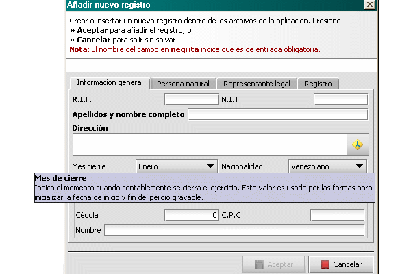

Nota:
Tenga presente que todos los valores que conforman los datos del contribuyente son tomados en cuenta durante el trabajo de la declaración. Por ello, debe prestar atención y colocar los valores lo mas parecidos a la realidad. Por ejemplo, veamos la información que se presenta al colocar el puntero del ratón sobre el campo mes de cierreSi este campo no es tomado en cuenta, al momento de asignar una forma los valores iniciales puede ser que no sean los deseados ya que la forma consulta el valor de este campo para determinar la fecha de inicio y fin del periodo gravable
Al presionar Aceptar, vera el nuevo contribuyente reflejado en la lista.